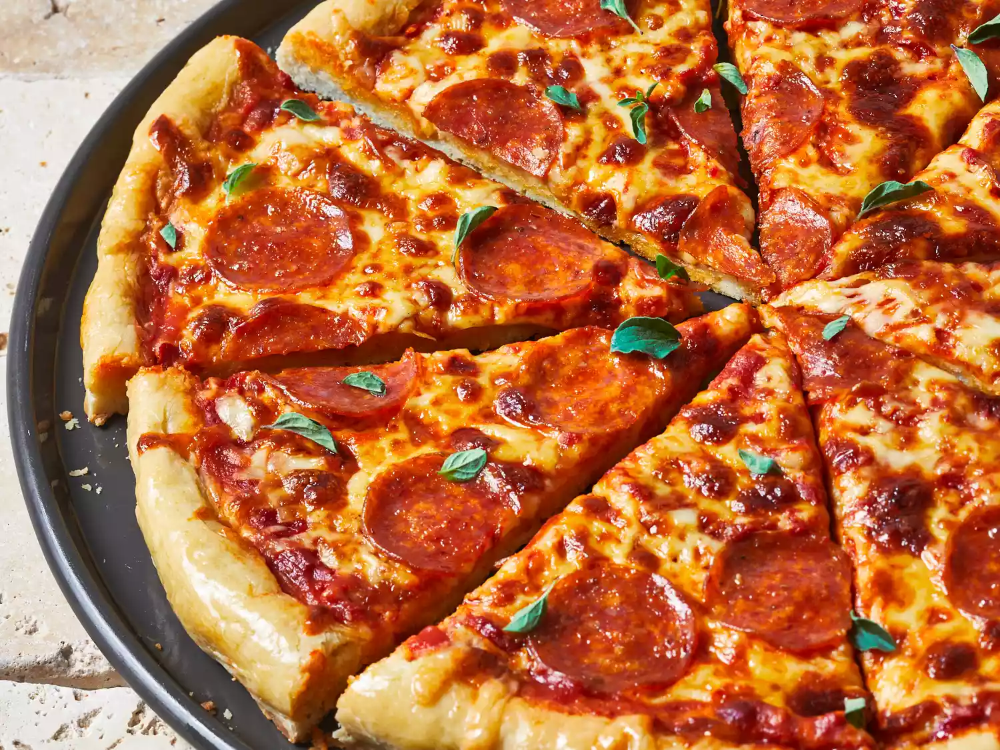

Pizza Recipes

Description
a dish made typically of flattened bread dough spread with a savory mixture usually including tomatoes and cheese and often other toppings and baked.
Ingredients
- 3 cups all-purpose flour
- 1 tablespoon white sugar
- 1 (.25 ounce) package active dry yeast
- 1 teaspoon salt
- 1 cup warm water (110 degrees F/45 degrees C)
- 2 tablespoons vegetable oil
Steps
- Gather all ingredients.
- Combine flour, sugar, yeast, and salt in a large bowl. Mix in warm water and oil until dough comes together